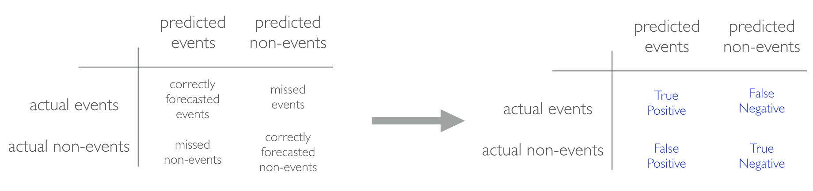

2 First model with Tidymodels
Much like EDA, the ML process is very iterative and heuristic-based. With minimal knowledge of the problem or data at hand, it is difficult to know which ML method will perform best. This is known as the no free lunch theorem for ML (Wolpert 1996). Consequently, it is common for many ML approaches to be applied, evaluated, and modified before a final, optimal model can be determined. Performing this process correctly provides great confidence in our outcomes. If not, the results will be useless and, potentially, damaging 1.
Approaching ML modeling correctly means approaching it strategically by spending our data wisely on learning and validation procedures, properly pre-processing the feature and target variables, minimizing data leakage, tuning hyperparameters, and assessing model performance. Many books and courses portray the modeling process as a short sprint. A better analogy would be a marathon where many iterations of these steps are repeated before eventually finding the final optimal model. This process is illustrated in Figure 2.1.
Before introducing specific algorithms, this chapter, and the next, introduce concepts that are fundamental to the ML modeling process and that you’ll see briskly covered in future modeling chapters. More specifically, this chapter is designed to get you acquainted with building predictive models using the Tidymodels construct. We’ll focus on the process of splitting our data for improved generalizability, using Tidymodel’s parsnip package for constructing our models, along with yardstick to measure model performance. Future chapters will build upon these concepts by focusing on other parts of the machine learning process illustrated above such as applying resampling procedures to give you a more robust assessment of model performance and performing hyperparameter tuning to control the complexity of machine learning algorithms.
2.1 Prerequisites
This chapter leverages the following packages.
# Helper packages
library(tidyverse) # for data manipulation & plotting
# Modeling process packages
library(modeldata) # for accessing data
library(tidymodels) # for modeling proceduresTo illustrate some of the concepts, we’ll use the Ames Housing and employee attrition data sets introduced in Section 1.7.
# Ames housing data
ames <- modeldata::ames
# Job attrition data
attrition <- modeldata::attrition %>%
mutate(Attrition = fct_relevel(Attrition, "Yes"))2.2 Data splitting
A major goal of the machine learning process is to find an algorithm \(f\left(X\right)\) that most accurately predicts future values (\(\hat{Y}\)) based on a set of features (\(X\)). In other words, we want an algorithm that not only fits well to our past data, but more importantly, one that predicts a future outcome accurately. This is called the generalizability of our algorithm. How we “spend” our data will help us understand how well our algorithm generalizes to unseen data.
To provide an accurate understanding of the generalizability of our final optimal model, we can split our data into training and test data sets:
- Training set: these data are used to develop feature sets, train our algorithms, tune hyperparameters, compare models, and all of the other activities required to choose a final model (e.g., the model we want to put into production).
- Test set: having chosen a final model, these data are used to estimate an unbiased assessment of the model’s performance, which we refer to as the generalization error.
It is critical that the test set not be used prior to selecting your final model. Assessing results on the test set prior to final model selection biases the model selection process since the testing data will have become part of the model development process.

Given a fixed amount of data, typical recommendations for splitting your data into training-test splits include 60% (training)–40% (testing), 70%–30%, or 80%–20%. Generally speaking, these are appropriate guidelines to follow; however, it is good to keep the following points in mind:
- Spending too much in training (e.g., \(>80\%\)) won’t allow us to get a good assessment of predictive performance. We may find a model that fits the training data very well, but is not generalizable (overfitting).
- Sometimes too much spent in testing (\(>40\%\)) won’t allow us to get a good assessment of model parameters.
Other factors should also influence the allocation proportions. For example, very large training sets (e.g., \(n > 100\texttt{K}\)) often result in only marginal gains compared to smaller sample sizes. Consequently, you may use a smaller training sample to increase computation speed (e.g., models built on larger training sets often take longer to score new data sets in production). In contrast, as \(p \geq n\) (where \(p\) represents the number of features), larger samples sizes are often required to identify consistent signals in the features.
The two most common ways of splitting data include simple random sampling and stratified sampling.
2.2.1 Simple random sampling
The simplest way to split the data into training and test sets is to take a simple random sample. This does not control for any data attributes, such as the distribution of your response variable (\(Y\)).
Sampling is a random process so setting the random number generator with a common seed allows for reproducible results. Throughout this course we’ll often use the seed 123 for reproducibility but the number itself has no special meaning.
# create train/test split
set.seed(123) # for reproducibility
split <- initial_split(ames, prop = 0.7)
train <- training(split)
test <- testing(split)
# dimensions of training data
dim(train)
## [1] 2051 74
# dimensions of test data
dim(test)
## [1] 879 74With sufficient sample size, this sampling approach will typically result in a similar distribution of \(Y\) (e.g., Sale_Price in the ames data) between your training and test sets, as illustrated below.
train %>%
mutate(id = 'train') %>%
bind_rows(test %>% mutate(id = 'test')) %>%
ggplot(aes(Sale_Price, color = id)) +
geom_density()
2.2.2 Stratified sampling
If we want to explicitly control the sampling so that our training and test sets have similar \(Y\) distributions, we can use stratified sampling. This is more common with classification problems where the response variable may be severely imbalanced (e.g., 90% of observations with response “Yes” and 10% with response “No”). However, we can also apply stratified sampling to regression problems for data sets that have a small sample size and where the response variable deviates strongly from normality (i.e., positively skewed like Sale_Price). With a continuous response variable, stratified sampling will segment \(Y\) into quantiles and randomly sample from each. Consequently, this will help ensure a balanced representation of the response distribution in both the training and test sets.
To perform stratified sampling we simply apply the strata argument in initial_split.
set.seed(123)
split_strat <- initial_split(attrition, prop = 0.7, strata = "Attrition")
train_strat <- training(split_strat)
test_strat <- testing(split_strat)The following illustrates that in our original employee attrition data we have an imbalanced response (No: 84%, Yes: 16%). By enforcing stratified sampling, both our training and testing sets have approximately equal response distributions.
# original response distribution
table(attrition$Attrition) %>% prop.table()
##
## Yes No
## 0.1612245 0.8387755
# response distribution for training data
table(train_strat$Attrition) %>% prop.table()
##
## Yes No
## 0.1605058 0.8394942
# response distribution for test data
table(test_strat$Attrition) %>% prop.table()
##
## Yes No
## 0.1628959 0.8371041There is very little downside to using stratified sampling so when trying to decide if you should use random sampling versus stratified sampling, error on the side of safety with stratified sampling.
2.2.3 Class imbalances
Imbalanced data can have a significant impact on model predictions and performance (Kuhn and Johnson 2013). Most often this involves classification problems where one class has a very small proportion of observations (e.g., defaults - 5% versus nondefaults - 95%). Several sampling methods have been developed to help remedy class imbalance and most of them can be categorized as either up-sampling or down-sampling.
Down-sampling balances the dataset by reducing the size of the abundant class(es) to match the frequencies in the least prevalent class. This method is used when the quantity of data is sufficient. By keeping all samples in the rare class and randomly selecting an equal number of samples in the abundant class, a balanced new dataset can be retrieved for further modeling. Furthermore, the reduced sample size reduces the computation burden imposed by further steps in the ML process.
On the contrary, up-sampling is used when the quantity of data is insufficient. It tries to balance the dataset by increasing the size of rarer samples. Rather than getting rid of abundant samples, new rare samples are generated by using repetition or bootstrapping (described further in ?sec-bootstrapping).
Note that there is no absolute advantage of one sampling method over another. Application of these two methods depends on the use case it applies to and the data set itself. A combination of over- and under-sampling is often successful and a common approach is known as Synthetic Minority Over-Sampling Technique, or SMOTE (Chawla et al. 2002). This alternative sampling approach, as well as others, can be implemented in R with the themis package2, which provides additional sampling procedures on top of the rsample package.
2.2.4 Knowledge check
2.3 Building models
The R ecosystem provides a wide variety of ML algorithm implementations. This makes many powerful algorithms available at your fingertips. Moreover, there are almost always more than one package to perform each algorithm (e.g., there are over 20 packages for fitting random forests). There are pros and cons to this wide selection; some implementations may be more computationally efficient while others may be more flexible. This also has resulted in some drawbacks as there are inconsistencies in how algorithms allow you to define the formula of interest and how the results and predictions are supplied.
Fortunately, the tidymodels ecosystem simplifies this and, in particular, the parsnip package3 provides one common interface to train many different models supplied by other packages. Consequently, we’ll focus on building models the tidymodels way.
To create and fit a model with parsnip we follow 3 steps:
- Create a model type
- Choose an “engine”
- Fit our model
Let’s illustrate by building a linear regression model. For our first model we will simply use two features from our training data - total square feet of the home (Gr_Liv_Area) and year built (Year_Built) to predict the sale price (Sale_Price).
We can use tidy() to get results of our model’s parameter estimates and their statistical properties. Although the summary() function can provide this output, it gives the results back in an unwieldy format. Go ahead, and run summary(lm_ols) to compare the results to what we see below.
Many models have a tidy() method that provides the summary results in a more predictable and useful format (e.g. a data frame with standard column names)
lm_ols <- linear_reg() %>%
fit(Sale_Price ~ Gr_Liv_Area + Year_Built, data = train)
tidy(lm_ols)
## # A tibble: 3 × 5
## term estimate std.error statistic p.value
## <chr> <dbl> <dbl> <dbl> <dbl>
## 1 (Intercept) -2157423. 69234. -31.2 8.09e-175
## 2 Gr_Liv_Area 94.4 2.12 44.4 2.54e-302
## 3 Year_Built 1114. 35.5 31.4 5.30e-177Don’t worry about what these parameters mean at this point; we’ll cover these details in a future chapter.
Now, you may have noticed that we only applied two of the three steps mentioned previously:
- Create a model type
Choose an “engine”- Fit our model
The reason is because most model objects (linear_reg() in this example) have a default engine. linear_reg() by default uses stats::lm for ordinary least squares.4 But we can always change the engine. For example, say you wanted to use keras to perform gradient descent linear regression, then you could change the engine to keras but use the same code workflow.
For this code to run successfully on your end you need to have the keras and tensorflow packages installed on your machine. Depending on your current setup this could be an easy process or you could run into problems. If you run into problems don’t fret, this is primarily just to illustrate how we can change engines.
lm_sgd <- linear_reg() %>%
set_engine('keras') %>%
fit(Sale_Price ~ Gr_Liv_Area + Year_Built, data = train)
## Epoch 1/20
## 65/65 - 0s - loss: 39844343808.0000 - 389ms/epoch - 6ms/step
## Epoch 2/20
## 65/65 - 0s - loss: 39657107456.0000 - 72ms/epoch - 1ms/step
## Epoch 3/20
## 65/65 - 0s - loss: 39484735488.0000 - 57ms/epoch - 870us/step
## Epoch 4/20
## 65/65 - 0s - loss: 39327612928.0000 - 56ms/epoch - 861us/step
## Epoch 5/20
## 65/65 - 0s - loss: 39183925248.0000 - 55ms/epoch - 845us/step
## Epoch 6/20
## 65/65 - 0s - loss: 39052455936.0000 - 56ms/epoch - 858us/step
## Epoch 7/20
## 65/65 - 0s - loss: 38930669568.0000 - 56ms/epoch - 857us/step
## Epoch 8/20
## 65/65 - 0s - loss: 38818447360.0000 - 56ms/epoch - 858us/step
## Epoch 9/20
## 65/65 - 0s - loss: 38714454016.0000 - 55ms/epoch - 851us/step
## Epoch 10/20
## 65/65 - 0s - loss: 38615891968.0000 - 56ms/epoch - 867us/step
## Epoch 11/20
## 65/65 - 0s - loss: 38519631872.0000 - 55ms/epoch - 847us/step
## Epoch 12/20
## 65/65 - 0s - loss: 38425276416.0000 - 55ms/epoch - 852us/step
## Epoch 13/20
## 65/65 - 0s - loss: 38329356288.0000 - 56ms/epoch - 854us/step
## Epoch 14/20
## 65/65 - 0s - loss: 38227800064.0000 - 55ms/epoch - 851us/step
## Epoch 15/20
## 65/65 - 0s - loss: 38116257792.0000 - 55ms/epoch - 845us/step
## Epoch 16/20
## 65/65 - 0s - loss: 37991399424.0000 - 55ms/epoch - 851us/step
## Epoch 17/20
## 65/65 - 0s - loss: 37847162880.0000 - 56ms/epoch - 864us/step
## Epoch 18/20
## 65/65 - 0s - loss: 37679300608.0000 - 54ms/epoch - 836us/step
## Epoch 19/20
## 65/65 - 0s - loss: 37485613056.0000 - 59ms/epoch - 907us/step
## Epoch 20/20
## 65/65 - 0s - loss: 37262540800.0000 - 55ms/epoch - 844us/stepWhen we talk about ‘engines’ we’re really just referring to packages that provide the desired algorithm. Each model object has different engines available to use and they are all documented. For example check out the help file for linear_reg (?linear_reg) and you’ll see the different engines available (lm, brulee, glm, glmnet, etc.)
The beauty of this workflow is that if we want to explore different models we can simply change the model object. For example, say we wanted to run a K-nearest neighbor model. We can just use nearest_neighbor().
In this example we have pretty much the same code as above except we added the line of code set_mode(). This is because most algorithms require you to specify if you are building a regression model or a classification model.
When you run this code you’ll probably get an error message saying that “This engine requires some package installs: ‘kknn’.” This just means you need to install.packages('kknn') and then you should be able to successfully run this code.
knn <- nearest_neighbor() %>%
set_engine("kknn") %>%
set_mode("regression") %>%
fit(Sale_Price ~ Gr_Liv_Area + Year_Built, data = train)You can see all the different model objects available at https://parsnip.tidymodels.org/reference/index.html
2.3.1 Knowledge check
2.4 Making predictions
We have fit a few different models. Now, if we want to see our predictions we can simply apply predict() and feed it the data set we want to make predictions on. Here, we can see the predictions made on our training data for our ordinary least square linear regression model.
lm_ols %>% predict(train)
## # A tibble: 2,051 × 1
## .pred
## <dbl>
## 1 217657.
## 2 214276.
## 3 223425.
## 4 260324.
## 5 109338.
## 6 195106.
## 7 222217.
## 8 126175.
## 9 98550.
## 10 120811.
## # ℹ 2,041 more rowsAnd here we get the predicted values for our KNN model.
knn %>% predict(train)
## # A tibble: 2,051 × 1
## .pred
## <dbl>
## 1 194967.
## 2 192240
## 3 174220
## 4 269760
## 5 113617.
## 6 173672
## 7 174820
## 8 120796
## 9 114560
## 10 121346
## # ℹ 2,041 more rowsA similar process can be applied to make predictions for a classification model. For example, the following trains a classification model that predicts whether an employee will attrit based on their age. When we make predictions, the output is the predicted class (employee attrition is Yes or No).
simple_logit <- logistic_reg() %>%
fit(Attrition ~ Age, data = train_strat)
simple_logit %>% predict(train_strat)
## # A tibble: 1,028 × 1
## .pred_class
## <fct>
## 1 No
## 2 No
## 3 No
## 4 No
## 5 No
## 6 No
## 7 No
## 8 No
## 9 No
## 10 No
## # ℹ 1,018 more rowsIn general, machine learning classifiers don’t just give binary predictions, but instead provide some numerical value between 0 and 1 for their predictions. This number, sometimes called the model score or confidence, is a way for the model to express their certainty about what class the input data belongs to. In most applications, the exact probability is ignored and we use a threshold (typically \(\geq 0.5\)) to round the score to a binary answer, yes or no, employee attrition or not attrition. But in some cases we do want the prediction probabilities and we can get those by adding type = "prob" to our predict call.
simple_logit %>% predict(train_strat, type = "prob")
## # A tibble: 1,028 × 2
## .pred_Yes .pred_No
## <dbl> <dbl>
## 1 0.178 0.822
## 2 0.0485 0.952
## 3 0.204 0.796
## 4 0.155 0.845
## 5 0.162 0.838
## 6 0.213 0.787
## 7 0.195 0.805
## 8 0.213 0.787
## 9 0.0664 0.934
## 10 0.141 0.859
## # ℹ 1,018 more rows2.4.1 Knowledge check
2.5 Model evaluation
Historically, the performance of statistical models was largely based on goodness-of-fit tests and assessment of residuals. Unfortunately, misleading conclusions may follow from predictive models that pass these kinds of assessments (Breiman et al. 2001). Today, it has become widely accepted that a more sound approach to assessing model performance is to assess the predictive accuracy via loss functions. Loss functions are metrics that compare the predicted values to the actual value (the output of a loss function is often referred to as the error or pseudo residual).
If we look at our predicted outputs for our ordinary least squares model, we can see that the predicted home value (.pred) was $149,091 for the first observation and the actual home value was $172,000, resulting in an error of nearly $23,000. The objective of the loss function is to aggregate the prediction errors for all the observations into a meaningful single value metric.
lm_ols %>%
predict(test) %>%
bind_cols(test %>% select(Sale_Price)) %>%
mutate(prediction_error = Sale_Price - .pred)
## # A tibble: 879 × 3
## .pred Sale_Price prediction_error
## <dbl> <int> <dbl>
## 1 149091. 172000 22909.
## 2 219596. 195500 -24096.
## 3 195491. 212000 16509.
## 4 97418. 141000 43582.
## 5 152195. 170000 17805.
## 6 134471. 142000 7529.
## 7 119697. 115000 -4697.
## 8 195517. 184000 -11517.
## 9 141210. 88000 -53210.
## 10 239057. 306000 66943.
## # ℹ 869 more rowsThere are many loss functions to choose from when assessing the performance of a predictive model, each providing a unique understanding of the predictive accuracy and differing between regression and classification models. Furthermore, the way a loss function is computed will tend to emphasize certain types of errors over others and can lead to drastic differences in how we interpret the “optimal model”. Its important to consider the problem context when identifying the preferred performance metric to use. And when comparing multiple models, we need to compare them across the same metric.
2.5.1 Regression models
The most common loss functions for regression models include:
MSE: Mean squared error is the average of the squared error (\(MSE = \frac{1}{n} \sum^n_{i=1}(y_i - \hat y_i)^2\))5. The squared component results in larger errors having larger penalties. Objective: minimize
RMSE: Root mean squared error. This simply takes the square root of the MSE metric (\(RMSE = \sqrt{\frac{1}{n} \sum^n_{i=1}(y_i - \hat y_i)^2}\)) so that your error is in the same units as your response variable. If your response variable units are dollars, the units of MSE are dollars-squared, but the RMSE will be in dollars. Objective: minimize
\(R^2\): This is a popular metric that represents the proportion of the variance in the dependent variable that is predictable from the independent variable(s). Unfortunately, it has several limitations. For example, two models built from two different data sets could have the exact same RMSE but if one has less variability in the response variable then it would have a lower \(R^2\) than the other. You should not place too much emphasis on this metric. Objective: maximize
Let’s compute the RMSE of our OLS regression model. Remember, we want to assess our model’s performance on the test data not the training data since that gives us a better idea of how our model generalizes. To do so, the following:
- Makes predictions with our test data,
- Adds the actual
Sale_Pricevalues from our test data, - Computes the RMSE.
lm_ols %>%
predict(test) %>%
bind_cols(test %>% select(Sale_Price)) %>%
rmse(truth = Sale_Price, estimate = .pred)
## # A tibble: 1 × 3
## .metric .estimator .estimate
## <chr> <chr> <dbl>
## 1 rmse standard 45445.The RMSE value suggests that, on average, our model mispredicts the expected sale price of a home by about $45K.
Other common loss functions for regression models include:
Deviance: Short for mean residual deviance. In essence, it provides a degree to which a model explains the variation in a set of data when using maximum likelihood estimation. Essentially this compares a saturated model (i.e. fully featured model) to an unsaturated model (i.e. intercept only or average). If the response variable distribution is Gaussian, then it will be approximately equal to MSE. When not, it usually gives a more useful estimate of error. Deviance is often used with classification models. 6 Objective: minimize
MAE: Mean absolute error. Similar to MSE but rather than squaring, it just takes the mean absolute difference between the actual and predicted values (\(MAE = \frac{1}{n} \sum^n_{i=1}(\vert y_i - \hat y_i \vert)\)). This results in less emphasis on larger errors than MSE. Objective: minimize
RMSLE: Root mean squared logarithmic error. Similar to RMSE but it performs a
log()on the actual and predicted values prior to computing the difference (\(RMSLE = \sqrt{\frac{1}{n} \sum^n_{i=1}(log(y_i + 1) - log(\hat y_i + 1))^2}\)). When your response variable has a wide range of values, large response values with large errors can dominate the MSE/RMSE metric. RMSLE minimizes this impact so that small response values with large errors can have just as meaningful of an impact as large response values with large errors. Objective: minimize
2.5.2 Classification models
When applying classification models, we often use a confusion matrix to evaluate certain performance measures. A confusion matrix is simply a matrix that compares actual categorical levels (or events) to the predicted categorical levels. When we predict the right level, we refer to this as a true positive. However, if we predict a level or event that did not happen this is called a false positive (i.e. we predicted a customer would redeem a coupon and they did not). Alternatively, when we do not predict a level or event and it does happen that this is called a false negative (i.e. a customer that we did not predict to redeem a coupon does).

Let’s go ahead and create a logistic regression classification model with the attrition data.
In R, using a “.”” as in Attrition ~ . is a shortcut for saying use all available features to predict Attrition.
logit <- logistic_reg() %>%
fit(Attrition ~ ., data = train_strat)We can use conf_mat() to view the confusion matrix for this model. In essence, this confusion matrix shows that our model has 34 true positive predictions, 353 true negative predictions, 17 false negative predictions, and 38 false predictions.
logit %>%
predict(test_strat) %>%
bind_cols(test_strat %>% select(Attrition)) %>%
conf_mat(truth = Attrition, estimate = .pred_class, dnn = c("Truth", "Prediction"))
## Prediction
## Truth Yes No
## Yes 34 17
## No 38 353Depending on the software and libraries used, you may see the prediction summaries on the rows and the actual value summaries in the columns or vice versa. conf_mat allows us to control that with the dnn argument to control the table dimension names.
This confusion matrix allows us to extract different levels of performance for our classification model. For example, we can assess:
Accuracy: Overall, how often is the classifier correct? Accuracy is the proportion of the data that are predicted correctly. Example: \(\frac{TP + TN}{total} = \frac{34+353}{442} = 0.867\). Objective: maximize
Precision: How accurately does the classifier predict events (or positive events)? This metric is concerned with maximizing the true positives to false positive ratio. In other words, for the number of predictions that we made, how many were correct? This characterizes the “purity in retrieval performance” (Buckland and Gey 1994). Example: \(\frac{TP}{TP + FP} = \frac{34}{34+17} = 0.667\). Objective: maximize
Sensitivity (aka recall): How accurately does the classifier classify actual events? The sensitivity is defined as the proportion of positive results out of the number of samples which were actually positive. This metric is concerned with maximizing the true positives to false negatives ratio. In other words, for the events that occurred, how many did we predict? Example: \(\frac{TP}{TP + FN} = \frac{34}{34+38} = 0.472\). Objective: maximize
Specificity: How accurately does the classifier classify actual non-events? The specificity measures the proportion of negatives that are correctly identified as negatives. Example: \(\frac{TN}{TN + FP} = \frac{353}{353+17} = 0.954\). Objective: maximize
predict_and_actuals <- logit %>%
predict(test_strat) %>%
bind_cols(test_strat %>% select(Attrition))
# accuracy
predict_and_actuals %>% accuracy(truth = Attrition, estimate = .pred_class)
## # A tibble: 1 × 3
## .metric .estimator .estimate
## <chr> <chr> <dbl>
## 1 accuracy binary 0.876
# precision
predict_and_actuals %>% precision(truth = Attrition, estimate = .pred_class)
## # A tibble: 1 × 3
## .metric .estimator .estimate
## <chr> <chr> <dbl>
## 1 precision binary 0.667
# recall
predict_and_actuals %>% sensitivity(truth = Attrition, estimate = .pred_class)
## # A tibble: 1 × 3
## .metric .estimator .estimate
## <chr> <chr> <dbl>
## 1 sensitivity binary 0.472
# specificity
predict_and_actuals %>% specificity(truth = Attrition, estimate = .pred_class)
## # A tibble: 1 × 3
## .metric .estimator .estimate
## <chr> <chr> <dbl>
## 1 specificity binary 0.954Our results show that our model has high accuracy, which is mainly driven by our model’s ability to predict non-events (employees that do not attrit) accurately. However, our model does not do a very good job of predicting positive events (employees that do attrit), represented by the low precision and sensitivity values.
A good binary classifier will have high precision and sensitivity. This means the classifier does well when it predicts an event will and will not occur, which minimizes false positives and false negatives. To capture this balance, we often use a receiver operator curve (ROC) that plots the sensitivity on the y-axis and 1-specificity on the x-axis. A line that is diagonal from the lower left corner to the upper right corner represents a random guess. The higher the line is in the upper left-hand corner, the better.
To plot the ROC curve we actually need to predict the probability of our classification model’s prediction. We then pass the predicted probabilities for the class we care about (here we are concerned with the probability of employees actually attriting) and the truth values to roc_curve.
logit %>%
predict(test_strat, type = "prob") %>%
bind_cols(test_strat %>% select(Attrition)) %>%
roc_curve(truth = Attrition, .pred_Yes) %>%
autoplot()Another common metric is the area under the curve (AUC). Generally, an ROC AUC value is between 0.5 and 1, with 1 being a perfect prediction model. If your value is between 0 and 0.5, then this implies that you have meaningful information in your model, but it is being applied incorrectly because doing the opposite of what the model predicts would result in an AUC > 0.5. The benefit of the AUC metric is that it gives us a single metric value that incorporates both sensitivity and specificity of our model. The higher the AUC value, the more balanced our model is.
logit %>%
predict(test_strat, type = "prob") %>%
bind_cols(test_strat %>% select(Attrition)) %>%
roc_auc(truth = Attrition, .pred_Yes)
## # A tibble: 1 × 3
## .metric .estimator .estimate
## <chr> <chr> <dbl>
## 1 roc_auc binary 0.8352.5.3 Knowledge check
2.6 Exercises
See https://www.fatml.org/resources/relevant-scholarship for many discussions regarding implications of poorly applied and interpreted ML.↩︎
https://themis.tidymodels.org↩︎
https://parsnip.tidymodels.org↩︎
lm()is the built in function provided by R to perform ordinary least squares regression. You can learn more about it by checking out the help docs with?lm.↩︎This deviates slightly from the usual definition of MSE in ordinary linear regression, where we divide by \(n-p\) (to adjust for bias) as opposed to \(n\).↩︎
See this StackExchange thread (http://bit.ly/what-is-deviance) for a good overview of deviance for different models and in the context of regression versus classification.↩︎
See more details at https://modeldata.tidymodels.org/reference/Chicago.html↩︎